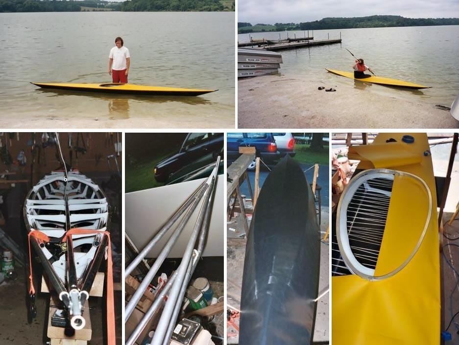

| Sea Raider and Sea Raider LC | Menu Previous Page Next Page |
|
 The Sea Raider and Sea Raider LC are low volume designs for larger paddlers. The boats are identical with the exception of the larger coaming ( 32 X 16) on the LC version. This Sea Raider LC was constructed in just 10 days. The coaming was made from aluminum channel. The Sea Raider Offsets and the Sea Raider LC Offsets are at the end of this section. Use the (BACK) key to return. |
|